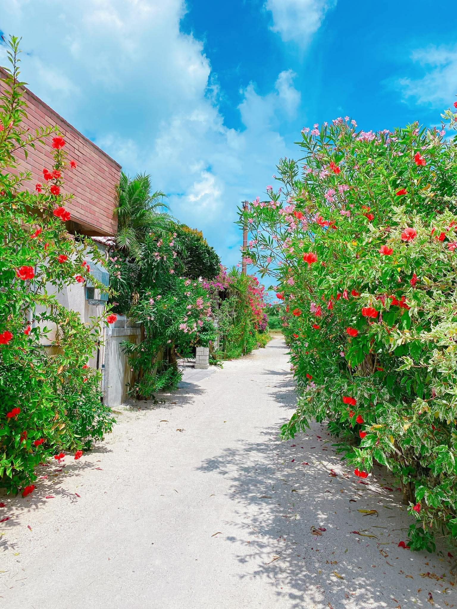

DAY 1
石垣島にほどけていく日
- 前泊の方と離島ターミナルで集合
- 南ぬ島石垣空港で合流
- 野底岳登山未就学児でも登れる山です。道路状況によっては中止し、別の美しい景色へご案内します。
- チェックイン
- 腸揉み施術・食事作り・食事・自由時間
ISHIGAKI ISLAND RETREAT / VOL.3
2027年3月後半予定 ｜ 2泊3日
波の音をBGMに、肌で風を感じる。
石垣島の自然に、ただ身をゆだねる時間。
3 DAYS FLOW
このリトリートでは、分刻みの予定は決めません。
太陽が昇る時間、沈む時間、その日の風や海の表情に合わせて、心地よい流れを選びます。
SCHEDULE
※天候・道路状況・太陽の上がり方や入り方により、内容や順番を変更する場合があります。
THE ISLAND GIVES YOU

ただ景色を見るだけではなく、砂浜を歩き、風を吸い込み、星空を見上げる。石垣島の自然の中で、心とからだの声をゆっくり聴く3日間です。
海開きの季節なら、海に入るという選択肢も。あなたにとって心地よい過ごし方を、一緒に見つけます。